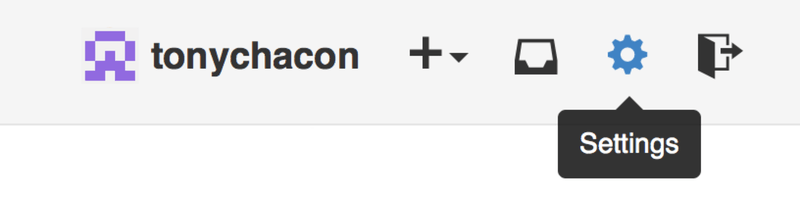
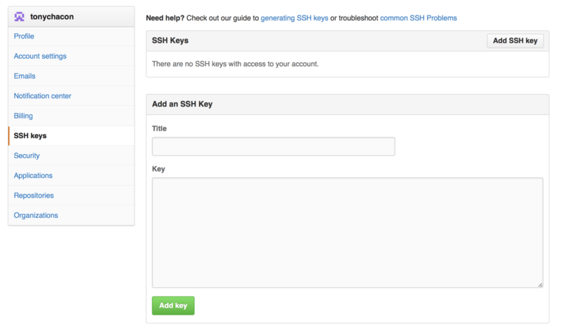
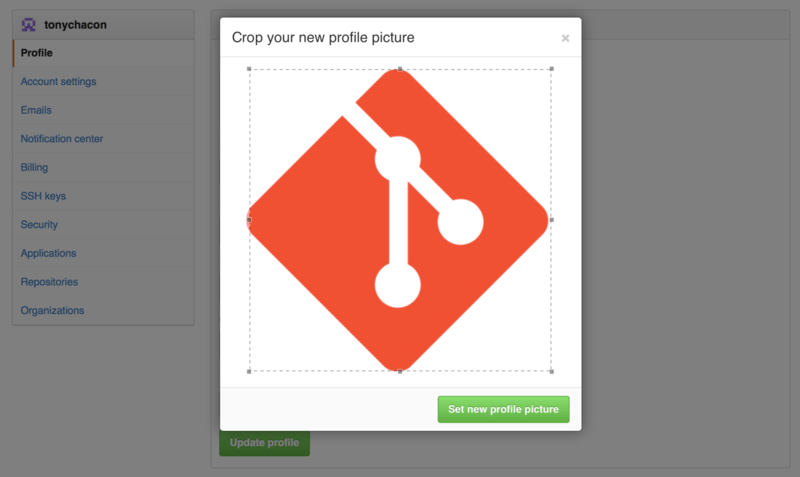
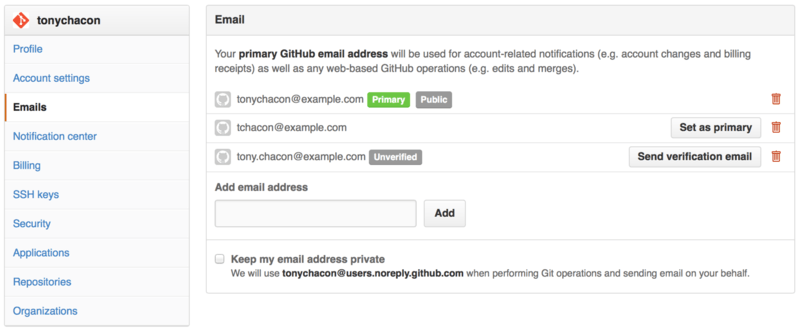
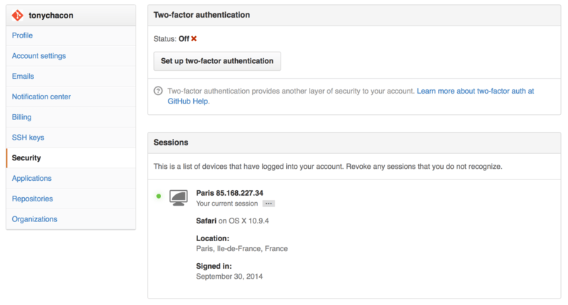

6.1 GitHub-Account Setup and Configuration
GitHub is the single largest host for Git repositories, and is the central point of collaboration for millions of developers and projects. A large percentage of all Git repositories are hosted on GitHub, and many open-source projects use it for Git hosting, issue tracking, code review, and other things. So while it’s not a direct part of the Git open source project, there’s a good chance that you’ll want or need to interact with GitHub at some point while using Git professionally.
This chapter is about using GitHub effectively. We’ll cover signing up for and managing an account, creating and using Git repositories, common workflows to contribute to projects and to accept contributions to yours, GitHub’s programmatic interface and lots of little tips to make your life easier in general.
If you are not interested in using GitHub to host your own projects or to collaborate with other projects that are hosted on GitHub, you can safely skip to Git Tools.
Account Setup and Configuration
The first thing you need to do is set up a free user account. Simply visit https://github.com, choose a user name that isn’t already taken, provide an email address and a password, and click the big green “Sign up for GitHub” button.

図 81. The GitHub sign-up form
The next thing you’ll see is the pricing page for upgraded plans, but it’s safe to ignore this for now. GitHub will send you an email to verify the address you provided. Go ahead and do this; it’s pretty important (as we’ll see later).
|
情報
|
GitHub provides almost all of its functionality with free accounts, except some advanced features. GitHub’s paid plans include advanced tools and features as well as increased limits for free services, but we won’t be covering those in this book. To get more information about available plans and their comparison, visit https://github.com/pricing. |
Clicking the Octocat logo at the top-left of the screen will take you to your dashboard page. You’re now ready to use GitHub.
SSH Access
As of right now, you’re fully able to connect with Git repositories using the https:// protocol, authenticating with the username and password you just set up.
However, to simply clone public projects, you don’t even need to sign up - the account we just created comes into play when we fork projects and push to our forks a bit later.
If you’d like to use SSH remotes, you’ll need to configure a public key. If you don’t already have one, see Generating Your SSH Public Key. Open up your account settings using the link at the top-right of the window:

図 82. The “Account settings” link
Then select the “SSH keys” section along the left-hand side.

図 83. The “SSH keys” link
From there, click the "Add an SSH key" button, give your key a name, paste the contents of your ~/.ssh/id_rsa.pub (or whatever you named it) public-key file into the text area, and click “Add key”.
|
情報
|
Be sure to name your SSH key something you can remember. You can name each of your keys (e.g. "My Laptop" or "Work Account") so that if you need to revoke a key later, you can easily tell which one you’re looking for. |
Your Avatar
Next, if you wish, you can replace the avatar that is generated for you with an image of your choosing. First go to the “Profile” tab (above the SSH Keys tab) and click “Upload new picture”.

図 84. The “Profile” link
We’ll choose a copy of the Git logo that is on our hard drive and then we get a chance to crop it.

図 85. Crop your avatar
Now anywhere you interact on the site, people will see your avatar next to your username.
If you happen to have uploaded an avatar to the popular Gravatar service (often used for Wordpress accounts), that avatar will be used by default and you don’t need to do this step.
Your Email Addresses
The way that GitHub maps your Git commits to your user is by email address. If you use multiple email addresses in your commits and you want GitHub to link them up properly, you need to add all the email addresses you have used to the Emails section of the admin section.

図 86. Add email addresses
In Add email addresses we can see some of the different states that are possible. The top address is verified and set as the primary address, meaning that is where you’ll get any notifications and receipts. The second address is verified and so can be set as the primary if you wish to switch them. The final address is unverified, meaning that you can’t make it your primary address. If GitHub sees any of these in commit messages in any repository on the site, it will be linked to your user now.
Two Factor Authentication
Finally, for extra security, you should definitely set up Two-factor Authentication or “2FA”. Two-factor Authentication is an authentication mechanism that is becoming more and more popular recently to mitigate the risk of your account being compromised if your password is stolen somehow. Turning it on will make GitHub ask you for two different methods of authentication, so that if one of them is compromised, an attacker will not be able to access your account.
You can find the Two-factor Authentication setup under the Security tab of your Account settings.

図 87. 2FA in the Security Tab
If you click on the “Set up two-factor authentication” button, it will take you to a configuration page where you can choose to use a phone app to generate your secondary code (a “time based one-time password”), or you can have GitHub send you a code via SMS each time you need to log in.
After you choose which method you prefer and follow the instructions for setting up 2FA, your account will then be a little more secure and you will have to provide a code in addition to your password whenever you log into GitHub.